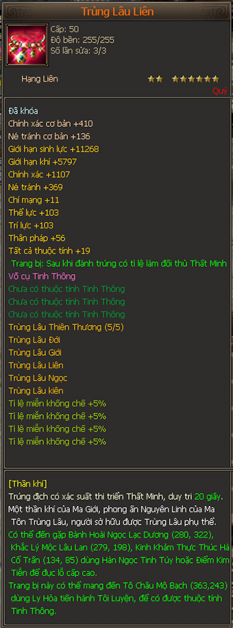

Trùng Lâu Liên¶
Tỉ lệ gây Thất Minh đối phương, kéo dài 7 giây (Trùng Lâu Phản)

Trang bị dây chuyền (hạng liên) Ma tôn Trùng Lâu Phản, có khả năng gây thất minh mục tiêu trong 7 giây.

Tỉ lệ gây Thất Minh đối phương, kéo dài 20 giây (Trùng Lâu Liên)
Trang bị dây chuyền (hạng liên) Ma tôn Trùng Lâu Liên, có khả năng gây thất minh mục tiêu trong 20 giây.

Tỉ lệ gây Thất Minh đối phương, kéo dài 25 giây (Chân Trùng Lâu Liên)
Đây là hàng hiếm, chỉ có vật phẩm khóa cố định, ghi nhận xuất hiện trong sự kiện Thiên Giáng Minh Châu.

Xếp sau Trùng Lâu Đới, Trùng Liên là vật phẩm có giá trị nhất với nhân vật dù mạnh hay yếu, với khả năng gây hiệu ứng mù (Thất Minh) cho đối phương tới tận 20 giây (lâu nhất trong các món Trùng Lâu), hơn nữa nó cũng là một hạng liên (dây chuyền) thông thường có thuộc tính + sinh lực tối đa rất thích hợp để phối ngọc nhằm tận dụng sức mạnh.
Giá thị trường: 10, 17, 20, 25 triệu đồng (Phản , Liên).
Trong sự kiện Thiên Giáng Minh Châu, dùng 555 Lưu Ly Minh Châu x 1000 (= 555.000 KNB) để đối Trùng Lâu Liên.
Và 2222 Lưu Ly Minh Châu (= 2.222.000 KNB) để đổi Chân Trùng Lâu Liên.